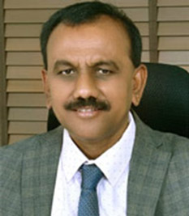

ಕುಲಪತಿಗಳ ಸಂದೇಶ

ಡಾ.ಕೆ.ಸಿ.ವೀರಣ್ಣ
ರಾಜ್ಯ ಮತ್ತು ರಾಷ್ಟ್ರದ ನಾಯಕರ ಪ್ರಯತ್ನದಿಂದ ಕಲ್ಯಾಣ ಕರ್ನಾಟಕ ಭಾಗಕ್ಕೆ ರಾಜ್ಯದ ಏಕೈಕ ಕರ್ನಾಟಕ ಪಶುವೈದ್ಯಕೀಯ, ಪಶು ಹಾಗೂ ಮೀನುಗಾರಿಕೆ ವಿಜ್ಞಾನಗಳ ವಿಶ್ವವಿದ್ಯಾಲಯ, ಬೀದರ ಸ್ಥಾಪನೆಯಾಯಿತು. ಪಶುಪಾಲನೆ, ಹೈನುಗಾರಿಕೆ ಮತ್ತು ಮೀನು ಸಾಕಾಣಿಕೆಯಂತಹ ರೈತೋದ್ಯಮಗಳ ಪ್ರಧಾನ ಅಭಿವೃದ್ಧಿಗಾಗಿ ಈ ವಿಶ್ವವಿದ್ಯಾಲಯವನ್ನು ಕರ್ನಾಟಕ ರಾಜ್ಯಪತ್ರದಲ್ಲಿ ಫೆಬ್ರವರಿ 23, 2004ರಲ್ಲಿ ಪ್ರಕಟಗೊಂಡ ಕರ್ನಾಟಕದ ಕಾಯ್ದೆ ಸಂಖ್ಯೆ 9, 2004 ರಂತೆ ಸ್ಥಾಪಿಸಲಾಯಿತು. ಕರ್ನಾಟಕ ರಾಜ್ಯಾದ್ಯಂತ ಪಶುವೈದ್ಯಕೀಯ, ಪಶು, ಹೈನು ಮತ್ತು ಮೀನುಗಾರಿಕೆ ವಿಜ್ಞಾನಗಳ ಕ್ಷೇತ್ರಗಳಲ್ಲಿ ಶಿಕ್ಷಣ-ಕಲಿಕೆ, ಸಂಶೋಧನೆ, ವಿಸ್ತರಣೆ ಹಾಗೂ ಗ್ರಾಮಿಣ ಆಧಾರಿತ ತಂತ್ರಜ್ಞಾನಗಳನ್ನು ವರ್ಗಾಯಿಸುವ ಧ್ಯೇಯದೊಂದಿಗೆ ಸ್ಥಾಪಿತವಾಗಿರುವ ವಿಶ್ವವಿದ್ಯಾಲಯದ ಲಾಂಛನವನ್ನು “ಗ್ರಾಮಿಣಾಭಿವೃದ್ಧಿ ಧ್ಯೇಯ ರೈತ-ಬಂಧು” ಎಂಬ ಧ್ಯೇಯವಾಖ್ಯಾನದೊಂದಿಗೆ ವರ್ಣಿಸಲಾಗಿದೆ. ಇದು ರೈತ ಸಮುದಾಯದ ಪ್ರಗತಿ ಮತ್ತು ಸುಧಾರಣೆಗೆ ನೀಡಿರುವ ಸಂದೇಶನ್ನು ಸಾರಿ ಹೇಳುತ್ತದೆ.
ವಿಶ್ವವಿದ್ಯಾಲಯವು ರಾಜ್ಯದ ಉದ್ದಗಲಕ್ಕೂ ಐದು ಪಶುವೈದ್ಯಕೀಯ ಮಹಾವಿದ್ಯಾಲಯಗಳು (ಬೀದರ, ಬೆಂಗಳೂರು, ಶಿವಮೊಗ್ಗ, ಹಾಸನ ಹಾಗೂ ಗದಗ), ಎರಡು ಹೈನುಗಾರಿಕೆ ವಿಜ್ಞಾನಗಳ ಮಹಾವಿದ್ಯಾಲಯಗಳು (ಬೆಂಗಳೂರು ಹಾಗೂ ಕಲಬುರಗಿ), ಒಂದು ಮೀನುಗಾರಿಕೆ ವಿಜ್ಞಾನಗಳ ಮಹಾವಿದ್ಯಾಲಯ (ಮಂಗಳೂರು), ಹತ್ತು ಸಂಶೋಧನೆ ಹಾಗೂ ಮಾಹಿತಿ ಕೇಂದ್ರಗಳು, ಐದು ಪಶುಸಂಗೋಪನೆ ಪಾಲಿಟೆಕ್ನಿಕ್ಗಳು ಮತ್ತು ಒಂದು ಕೃಷಿ ವಿಜ್ಞಾನ ಕೇಂದ್ರ, ಮಂಗಳೂರಿನೊಂದಿಗೆ ಇಡೀ ರಾಜ್ಯಾದ್ಯಂತ ಶಿಕ್ಷಣ, ಸಂಶೋಧನೆ ಹಾಗೂ ವಿಸ್ತರಣೆಗೆ ಸಂಬಂಧಿಸಿದ ಕಾರ್ಯವ್ಯಾಪ್ತಿಯನ್ನು ಹೊಂದಿದೆ. ಇದಲ್ಲದೇ, ವಿಶ್ವವಿದ್ಯಾಲಯದ ಅಧೀನದಡಿಯಲ್ಲಿ ಕಾರ್ಯನಿರ್ವಹಿಸುತ್ತಿರುವ ಪಶು ಆರೋಗ್ಯ ಮತ್ತು ಜೈವಿಕ ಸಂಸ್ಥೆಯು ಜೈವಿಕ ಲಸಿಕೋತ್ಪಾದನೆ ಮತ್ತು ರೋಗನಿರ್ಣಯ ಸೇವೆಗಳ ಉತ್ಪಾದನೆಗೆ ಸಂಬಂಧಿತ ವಲಯದಲ್ಲಿ ಕಾರ್ಯನಿರ್ವಹಿಸುತ್ತಿದೆ.
ಈ ವಿಶ್ವವಿದ್ಯಾಲಯದಿಂದ ಪದವಿ ಪಡೆದ ವಿದ್ಯಾರ್ಥಿಗಳು ಮುಂದೆ ಉನ್ನತವ್ಯಾಸಂಗ ಹಾಗೂ ಉನ್ನತ ಹುದ್ದೆಯನ್ನು ಅಲಂಕರಿಸಿರುವುದು ಈ ವಿಶ್ವವಿದ್ಯಾಲಯದ ಭೋಧನೆಯ ಗುಣಮಟ್ಟವನ್ನು ಎತ್ತಿ ಹಿಡಿಯುತ್ತದೆ. ಇವರೆಲ್ಲರೂ ತಮ್ಮ ಕೆಲಸದಲ್ಲಿ ಸೇವಾ ಮನೋಭಾವನೆಯ ಶ್ರೇಷ್ಠತೆಯಿಂದ ವಿಶ್ವವಿದ್ಯಾಲಯವು ಜಾಗತಿಕ ಮಟ್ಟದಲ್ಲಿ ಹೆಸರುವಾಸಿಯಾಗಲು ಕಾರಣಿಭೂತರಾಗಿದ್ದಾರೆ.
ಈ ವಿಶ್ವವಿದ್ಯಾಲಯವು ಭಾರತೀಯ ಕೃಷಿ ಅನುಸಂಧಾನ ಪರಿಷತ್ತು, ವಿಶ್ವಬ್ಯಾಂಕ, ಅಂತರಾಷ್ಟ್ರೀಯ ಅರೇ ಖುಷ್ಕವಲಯ ಬೆಳೆಗಳ ಸಂಶೋಧನೆ ಸಂಸ್ಥೆ ಯಂತಹ ರಾಷ್ಟ್ರೀಯ ಹಾಗೂ ಅಂತರಾಷ್ಟ್ರೀಯ ಸಂಸ್ಥೆಗಳ ಸಹಯೋಗ ಮತ್ತು ಸಹಕಾರದೊಂದಿಗೆ ಉನ್ನತಮಟ್ಟದ ಸಂಶೋಧನೆ ಮತ್ತು ಅಭಿವೃಧ್ಧಿ ಕಾರ್ಯ ಯೋಜನೆಗಳನ್ನು ಅನುಷ್ಠಾನಗೊಳಿಸುತ್ತಿದೆ. ಜೊತೆಗೆ ರೈತ ಸಮುದಾಯದ ಸರ್ವಾಂಗಿಣ ಏಳ್ಗೆಗಾಗಿ ಮೂಲವಿಜ್ಞಾನ ಸಮಸ್ಯೆಗಳನ್ನು ನಿಭಾಯಿಸಲು ಹಾಗೂ ಅನ್ವಯಿಕ ಸಂಶೋಧನೆಯನ್ನು ಬೆಂಬಲಿಸಲು ಮೂಲವಿಜ್ಞಾನ ಸಂಶೋಧನೆಗಳಿಗೆ ಒತ್ತು ನೀಡಲಾಗುತ್ತಿದೆ.
ವಿಶ್ವವಿದ್ಯಾಲಯವು ರೈತಸಮುದಾಯದೊಂದಿಗೆ ಸರ್ಕಾರಿ ಇಲಾಖೆಗಳು ಹಾಗೂ ಇನ್ನಿತರ ಸಂಸ್ಥೆಗಳೊಂದಿಗೆ ಉತ್ತಮ ಬಾಂಧವ್ಯ ದಿಂದ ಕಾರ್ಯನಿರ್ವಹಿಸುತ್ತಿರುವುದರಿಂದಾಗಿ ತನ್ನದೇ ಆದ ಪ್ರಖ್ಯಾತಿಯನ್ನು ಪಡೆದಿದೆ. ವಿಶ್ವವಿದ್ಯಾಲಯದ ಸಂಶೋಧನೆ ಮತ್ತು ಅಭಿವೃದ್ಧಿ ಯೋಜನೆಗಳಿಂದ ಹೊರಹೊಮ್ಮುವ ಯಶೋಗಾಥೆಗಳು ಪಶುಸಂಗೋಪನೆ, ಹೈನು ಹಾಗೂ ಮೀನುಗಾರಿಕೆ ಕೇತ್ರಗಳಲ್ಲಿ ಇತರ ರೈತರನ್ನು ಸಬಲೀಕರಣಗೊಳಿಸಲು ಸ್ಫೂರ್ತಿಯಾಗಿ ಕಾರ್ಯನಿರ್ವಹಿಸುತ್ತಿವೆ.
ವಿಶ್ವವಿದ್ಯಾಲಯವು ಪ್ರಾರಂಭದಿಂದಲೂ ಅಪ್ರತಿಮ ಯಶಸ್ಸನ್ನು ಗಳಿಸಿದೆ. ಆದಾಗ್ಯೂ, ಸ್ಥಳೀಯ ಹಾಗೂ ಜಾಗತಿಕ ಮಟ್ಟದಲ್ಲಿ ವಿಶ್ವವಿದ್ಯಾಲಯದ ಸಂಘಟನೆ ಹಾಗೂ ಕಾರ್ಯವೈಖರಿಯ ಬಗ್ಗೆ ಆತ್ಮಾವಲೋಕನ ಮಾಡುವುದು ತುಂಬಾ ಅವಶ್ಯಕವಾಗಿದೆ. ಇದರಿಂದ ರೈತ ಸಮುದಾಯದ ಸವಾಲುಗಳು ಹಾಗೂ ಬೇಡಿಕೆಗಳನ್ನು ಈಡೇರಿಸಲು ತರಬೇಕಾದ ಚಟುವಟಿಕೆಗಳ ಬಗ್ಗೆ ಮುಂದಾಲೋಚನೆಯನ್ನು ಮಾಡಬೇಕಾಗಿದೆ. ಪ್ರಾಕೃತಿಕ ಸಂಪನ್ಮೂಲಗಳು, ಜೀವವೈವಿಧ್ಯೆ ಸಂರಕ್ಷಣೆ, ಹವಾಮಾನ ಬದಲಾವಣೆ, ಸ್ಥಳಿಯ/ ದೇಶಿ ವ್ಯವಸ್ಥೆಗಳ ಮೇಲೆ ಗಮನಹರಿಸುವುದು ಇತ್ಯಾದಿ ಅಂಶಗಳನ್ನು ಗಮನದಲ್ಲಿಟ್ಟುಕೊಂಡು ಕೃಷಿ ಹಾಗೂ ಜಾನುವಾರು ಉತ್ಪಾದಕತೆ, ರೈತರ ಆದಾಯವನ್ನು ಹೆಚ್ಚಿಸುವುದು, ಉದ್ಯಮಶೀಲತೆಯ ಅಭಿವೃದ್ದಿ ಹಾಗೂ ಶಿಕ್ಷಣದ ಗುಣಮಟ್ಟವನ್ನು ಇನ್ನಷ್ಟು ಸುಧಾರಿಸುವುದು ತುಂಬಾ ಅವಶ್ಯಕವಾಗಿದೆ.
ಪ್ರಸ್ತುತ ಸಾಮಾಜಿಕ ಮತ್ತು ತಾಂತ್ರಿಕತೆಯ ವಿಜ್ಞಾನದಲ್ಲಿ ಹೊಸ ಮೈಲಿಗಲ್ಲು ಮತ್ತು ಸಮಕಾಲೀನ ಬೆಳವಣಿಗೆಗಳೊಂದಿಗೆ ವೇಗವನ್ನು ಸಾಧಿಸಲು ಪ್ರಯತ್ನಿಸಲಾಗುತ್ತಿದೆ. ಇಷ್ಟೇ ಅಲ್ಲದೇ, ವಿಶ್ವವಿದ್ಯಾಲಯವು ರಾಜ್ಯ ಹಾಗೂ ರಾಷ್ಟ್ರದ ಜಾನುವಾರು ಹಾಗೂ ಮೀನುಗಾರಿಕೆ ಕ್ಷೇತ್ರದಲ್ಲಿ ಗಣನೀಯ ಸಾಧನೆ ಹಾಗೂ ರೈತ ಸಮುದಾಯಕ್ಕೆ ಸೇವೆ ಸಲ್ಲಿಸಲು ಅತ್ಯುತ್ತಮ ಮಾನವ ಸಂಪನ್ಮೂಲ, ಹೊಸ ತಂತ್ರಜ್ಞಾನಗಳು ಮತ್ತು ಅವುಗಳ ಪ್ರಸರಣೇಯನ್ನು ಅಭಿವೃದ್ಧಿಪಡಿಸಲು ಶ್ರಮವಹಿಸುತ್ತಿದೆ.
ಈ ಸಂದರ್ಭದಲ್ಲಿ ವಿಶ್ವವಿದ್ಯಾಲಯಕ್ಕೆ ಕೀರ್ತಿ ಹಾಗೂ ಗೌರವವನ್ನು ತಂದುಕೊಟ್ಟ ಎಲ್ಲ ಶಿಕ್ಷಕ, ಶಿಕ್ಷಕೇತರ ಸಿಬ್ಬಂದಿ ಹಾಗೂ ವಿದ್ಯಾರ್ಥಿಗಳನ್ನು ನಾನು ಅಭಿನಂದಿಸುತ್ತೇನೆ ಮತ್ತು ಈ ಗೌರವಾನ್ವೀತ ವಿಶ್ವವಿದ್ಯಾಲಯದ ಅಭಿವೃದ್ಧಿಗೆ ಪ್ರತ್ಯಕ್ಷ ಮತ್ತು ಪರೋಕ್ಷವಾಗಿ ಸಹಕರಿಸಿಸುತ್ತಿರುವ ಎಲ್ಲರಿಗೂ ನನ್ನ ಹೃತ್ಪೂರ್ವಕ ಧನ್ಯವಾದಗಳು.
(ಕೆ.ಸಿ.ವೀರಣ್ಣ)
ಕುಲಪತಿಗಳು